library(skimr)
skim(gapm)Lesson 13: Purposeful model selection
Learning Objectives
Understand the overall steps for purposeful selection as a model building strategy
Apply purposeful selection to a dataset using R
Use different approaches to assess the linear scale of continuous variables in logistic regression
Regression analysis process


Model Selection
Building a model
Selecting variables
Prediction vs interpretation
Comparing potential models
Model Fitting
Find best fit line
Using OLS in this class
Parameter estimation
Categorical covariates
Interactions
Model Evaluation
- Evaluation of model fit
- Testing model assumptions
- Residuals
- Transformations
- Influential points
- Multicollinearity
Model Use (Inference)
- Inference for coefficients
- Hypothesis testing for coefficients
- Inference for expected \(Y\) given \(X\)
- Prediction of new \(Y\) given \(X\)
Learning Objectives
- Understand the overall steps for purposeful selection as a model building strategy
Apply purposeful selection to a dataset using R
Use different approaches to assess the linear scale of continuous variables in logistic regression
“Successful modeling of a complex data set is part science, part statistical methods, and part experience and common sense.”
Hosmer, Lemeshow, and Sturdivant Textbook, pg. 101
Overall Process
Exploratory data analysis
Check unadjusted associations in simple linear regression
Enter all covariates in model that meet some threshold
- One textbook suggest \(p<0.2\) or \(p<0.25\): great for modest sized datasets
- PLEASE keep in mind sample size in your study
- Can also use magnitude of association rather than, or along with, p-value
Remove those that no longer reach some threshold
- Compare magnitude of associations to unadjusted version (univariable)
Check scaling of continuous and coding of categorical covariates
Check for interactions
Assess model fit
- Model assumptions, diagnostics, overall fit
Process with snappier step names
Pre-step:
Step 1:
Step 2:
Step 3:
Step 4:
Step 5:
Step 6:
Exploratory data analysis (EDA)
Simple linear regressions / analysis
Preliminary variable selection
Assess change in coefficients
Assess scale for continuous variables
Check for interactions
Assess model fit
Learning Objectives
- Understand the overall steps for purposeful selection as a model building strategy
- Apply purposeful selection to a dataset using R
- Use different approaches to assess the linear scale of continuous variables in logistic regression
Pre-step: Exploratory data analysis
Things we have been doing over the quarter in class and in our project
I will not discuss some of the methods mentioned in our lab and data management class
- I am only going to introduce additional exploratory functions
A few things we can do:
- Check the data
- Study your variables
- Missing data?
- Explore simple relationships and assumptions
Pre-step: Exploratory data analysis: Check the data
Get to know the potential values for the data
Categories
Units
Then make sure the summary of values makes sense
- If minimum or maximum look outside appropriate range
- For example: a negative value for a measurement that is inherently positive (like population or income)

Pre-step: Exploratory data analysis: Check the data
Pre-step: Exploratory data analysis: Check the data
Look at a summary for the raw data
Typical use:
library(skimr)
skim(gapm)Note that
skim(gapm)looks different because I had to create factorsI am breaking down the
skim()function into the categorical and continuous variables only because I want to show them on the slides
skim(gapm_sub1) %>% yank("factor")Variable type: factor
| skim_variable | n_missing | complete_rate | ordered | n_unique | top_counts |
|---|---|---|---|---|---|
| four_regions | 0 | 1.00 | FALSE | 4 | Asi: 57, Afr: 54, Eur: 49, Ame: 35 |
| income_levels1 | 1 | 0.99 | FALSE | 4 | Hig: 56, Upp: 55, Low: 52, Low: 31 |
| income_levels2 | 1 | 0.99 | FALSE | 2 | Hig: 111, Low: 83 |
Pre-step: Exploratory data analysis: Check the data
skim(gapm_sub1) %>% yank("numeric")Variable type: numeric
| skim_variable | n_missing | complete_rate | mean | sd | p0 | p25 | p50 | p75 | p100 | hist |
|---|---|---|---|---|---|---|---|---|---|---|
| CO2emissions | 4 | 0.98 | 4.55 | 6.10 | 0.03 | 0.64 | 2.41 | 6.22 | 41.20 | ▇▁▁▁▁ |
| ElectricityUsePP | 58 | 0.70 | 4220.92 | 5964.07 | 31.10 | 699.00 | 2410.00 | 5600.00 | 52400.00 | ▇▁▁▁▁ |
| FoodSupplykcPPD | 27 | 0.86 | 2825.06 | 443.59 | 1910.00 | 2490.00 | 2775.00 | 3172.50 | 3740.00 | ▅▇▇▇▅ |
| IncomePP | 2 | 0.99 | 16704.45 | 19098.61 | 614.00 | 3370.00 | 10100.00 | 22700.00 | 129000.00 | ▇▂▁▁▁ |
| LifeExpectancyYrs | 8 | 0.96 | 70.66 | 8.44 | 47.50 | 64.30 | 72.70 | 76.90 | 82.90 | ▁▃▃▇▇ |
| FemaleLiteracyRate | 115 | 0.41 | 81.65 | 21.95 | 13.00 | 70.97 | 91.60 | 98.03 | 99.80 | ▁▁▂▁▇ |
| WaterSourcePrct | 1 | 0.99 | 84.84 | 18.64 | 18.30 | 74.90 | 93.50 | 99.07 | 100.00 | ▁▁▂▂▇ |
| Latitude | 0 | 1.00 | 19.11 | 23.93 | -42.00 | 4.00 | 17.33 | 40.00 | 65.00 | ▁▃▇▆▅ |
| Longitude | 0 | 1.00 | 21.98 | 66.52 | -175.00 | -5.75 | 21.00 | 49.27 | 179.14 | ▁▃▇▃▂ |
| population_mill | 0 | 1.00 | 35.95 | 136.87 | 0.00 | 1.73 | 7.57 | 24.50 | 1370.00 | ▇▁▁▁▁ |
Poll Everywhere Question 1
Pre-step: Exploratory data analysis: Study your variables
Started this a little bit in previous slide (
skim()), but you may want to look at things like:- Sample size
- Counts of missing data
- Means and standard deviations
- IQRs
- Medians
- Minimums and maximums
Can also look at visuals
- Continuous variables: histograms (in `skimr() a little)
- Categorical variables: frequency plots
Pre-step: Exploratory data analysis: Study your variables
library(Hmisc)
Attaching package: 'Hmisc'The following object is masked from 'package:plotly':
subplotThe following object is masked from 'package:gt':
htmlThe following objects are masked from 'package:dplyr':
src, summarizeThe following objects are masked from 'package:base':
format.pval, unitshist.data.frame(gapm %>% select(-Longitude, -Latitude, -eight_regions, -six_regions, -geo, -`World bank, 4 income groups 2017`, -country, -population, -`World bank region`, -ElectricityUsePP))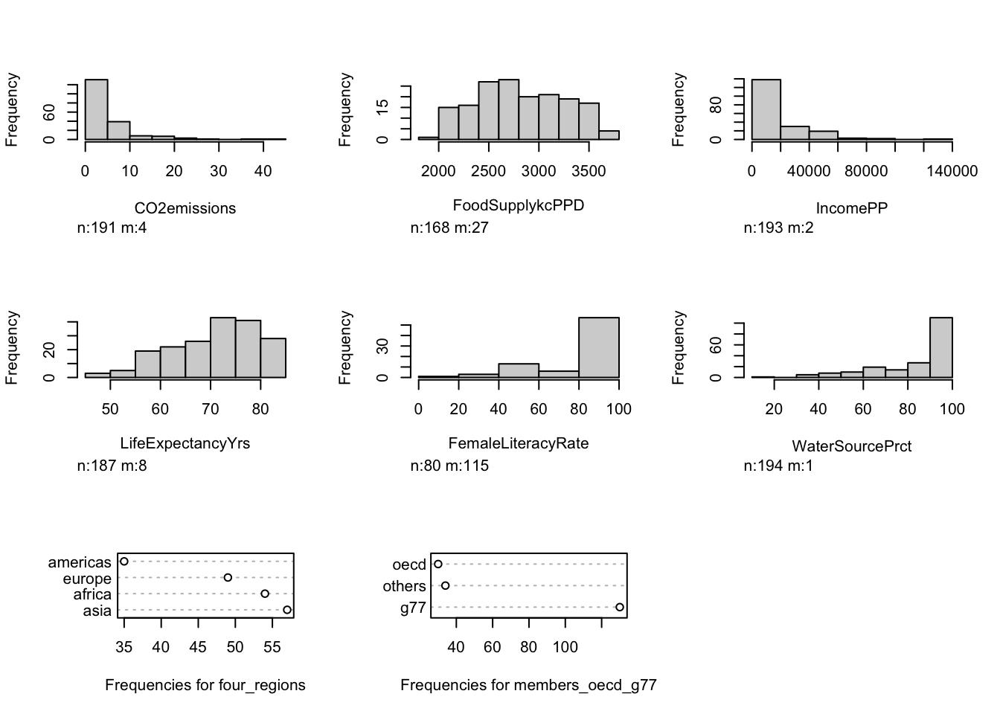
Poll Everywhere Question 2
Pre-step: Exploratory data analysis: Missing data
- Why are there missing data?
- Which variables and observations should be excluded because of missing data?
- Will I impute missing data?
- Unfortunately, we don’t have time to discuss missing data more thoroughly
- I will try to cover this topic more thoroughly in BSTA 513
- For the Gapminder dataset, we chose to use complete cases
Pre-step / Step 1 : Explore simple relationships and assumptions
gapm2 %>% ggpairs() # gapm2 is a new dataset with some variables selectedWarning: Removed 4 rows containing non-finite outside the scale range
(`stat_density()`).Warning in ggally_statistic(data = data, mapping = mapping, na.rm = na.rm, :
Removed 27 rows containing missing valuesWarning in ggally_statistic(data = data, mapping = mapping, na.rm = na.rm, :
Removed 5 rows containing missing valuesWarning in ggally_statistic(data = data, mapping = mapping, na.rm = na.rm, :
Removed 9 rows containing missing valuesWarning in ggally_statistic(data = data, mapping = mapping, na.rm = na.rm, :
Removed 115 rows containing missing valuesWarning in ggally_statistic(data = data, mapping = mapping, na.rm = na.rm, :
Removed 4 rows containing missing valuesWarning: Removed 4 rows containing non-finite outside the scale range
(`stat_boxplot()`).
Removed 4 rows containing non-finite outside the scale range
(`stat_boxplot()`).Warning: Removed 27 rows containing missing values or values outside the scale range
(`geom_point()`).Warning: Removed 27 rows containing non-finite outside the scale range
(`stat_density()`).Warning in ggally_statistic(data = data, mapping = mapping, na.rm = na.rm, :
Removed 27 rows containing missing valuesWarning in ggally_statistic(data = data, mapping = mapping, na.rm = na.rm, :
Removed 28 rows containing missing valuesWarning in ggally_statistic(data = data, mapping = mapping, na.rm = na.rm, :
Removed 123 rows containing missing valuesWarning in ggally_statistic(data = data, mapping = mapping, na.rm = na.rm, :
Removed 27 rows containing missing valuesWarning: Removed 27 rows containing non-finite outside the scale range
(`stat_boxplot()`).
Removed 27 rows containing non-finite outside the scale range
(`stat_boxplot()`).Warning: Removed 5 rows containing missing values or values outside the scale range
(`geom_point()`).Warning: Removed 27 rows containing missing values or values outside the scale range
(`geom_point()`).Warning: Removed 2 rows containing non-finite outside the scale range
(`stat_density()`).Warning in ggally_statistic(data = data, mapping = mapping, na.rm = na.rm, :
Removed 8 rows containing missing valuesWarning in ggally_statistic(data = data, mapping = mapping, na.rm = na.rm, :
Removed 115 rows containing missing valuesWarning in ggally_statistic(data = data, mapping = mapping, na.rm = na.rm, :
Removed 2 rows containing missing valuesWarning: Removed 2 rows containing non-finite outside the scale range
(`stat_boxplot()`).
Removed 2 rows containing non-finite outside the scale range
(`stat_boxplot()`).Warning: Removed 9 rows containing missing values or values outside the scale range
(`geom_point()`).Warning: Removed 28 rows containing missing values or values outside the scale range
(`geom_point()`).Warning: Removed 8 rows containing missing values or values outside the scale range
(`geom_point()`).Warning: Removed 8 rows containing non-finite outside the scale range
(`stat_density()`).Warning in ggally_statistic(data = data, mapping = mapping, na.rm = na.rm, :
Removed 115 rows containing missing valuesWarning in ggally_statistic(data = data, mapping = mapping, na.rm = na.rm, :
Removed 8 rows containing missing valuesWarning: Removed 8 rows containing non-finite outside the scale range
(`stat_boxplot()`).
Removed 8 rows containing non-finite outside the scale range
(`stat_boxplot()`).Warning: Removed 115 rows containing missing values or values outside the scale range
(`geom_point()`).Warning: Removed 123 rows containing missing values or values outside the scale range
(`geom_point()`).Warning: Removed 115 rows containing missing values or values outside the scale range
(`geom_point()`).
Removed 115 rows containing missing values or values outside the scale range
(`geom_point()`).Warning: Removed 115 rows containing non-finite outside the scale range
(`stat_density()`).Warning in ggally_statistic(data = data, mapping = mapping, na.rm = na.rm, :
Removed 115 rows containing missing valuesWarning: Removed 115 rows containing non-finite outside the scale range
(`stat_boxplot()`).
Removed 115 rows containing non-finite outside the scale range
(`stat_boxplot()`).Warning: Removed 4 rows containing missing values or values outside the scale range
(`geom_point()`).Warning: Removed 27 rows containing missing values or values outside the scale range
(`geom_point()`).Warning: Removed 2 rows containing missing values or values outside the scale range
(`geom_point()`).Warning: Removed 8 rows containing missing values or values outside the scale range
(`geom_point()`).Warning: Removed 115 rows containing missing values or values outside the scale range
(`geom_point()`).Warning: Removed 1 row containing non-finite outside the scale range
(`stat_density()`).Warning: Removed 1 row containing non-finite outside the scale range (`stat_boxplot()`).
Removed 1 row containing non-finite outside the scale range (`stat_boxplot()`).`stat_bin()` using `bins = 30`. Pick better value with `binwidth`.Warning: Removed 4 rows containing non-finite outside the scale range
(`stat_bin()`).`stat_bin()` using `bins = 30`. Pick better value with `binwidth`.Warning: Removed 27 rows containing non-finite outside the scale range
(`stat_bin()`).`stat_bin()` using `bins = 30`. Pick better value with `binwidth`.Warning: Removed 2 rows containing non-finite outside the scale range
(`stat_bin()`).`stat_bin()` using `bins = 30`. Pick better value with `binwidth`.Warning: Removed 8 rows containing non-finite outside the scale range
(`stat_bin()`).`stat_bin()` using `bins = 30`. Pick better value with `binwidth`.Warning: Removed 115 rows containing non-finite outside the scale range
(`stat_bin()`).`stat_bin()` using `bins = 30`. Pick better value with `binwidth`.Warning: Removed 1 row containing non-finite outside the scale range
(`stat_bin()`).`stat_bin()` using `bins = 30`. Pick better value with `binwidth`.Warning: Removed 4 rows containing non-finite outside the scale range
(`stat_bin()`).`stat_bin()` using `bins = 30`. Pick better value with `binwidth`.Warning: Removed 27 rows containing non-finite outside the scale range
(`stat_bin()`).`stat_bin()` using `bins = 30`. Pick better value with `binwidth`.Warning: Removed 2 rows containing non-finite outside the scale range
(`stat_bin()`).`stat_bin()` using `bins = 30`. Pick better value with `binwidth`.Warning: Removed 8 rows containing non-finite outside the scale range
(`stat_bin()`).`stat_bin()` using `bins = 30`. Pick better value with `binwidth`.Warning: Removed 115 rows containing non-finite outside the scale range
(`stat_bin()`).`stat_bin()` using `bins = 30`. Pick better value with `binwidth`.Warning: Removed 1 row containing non-finite outside the scale range
(`stat_bin()`).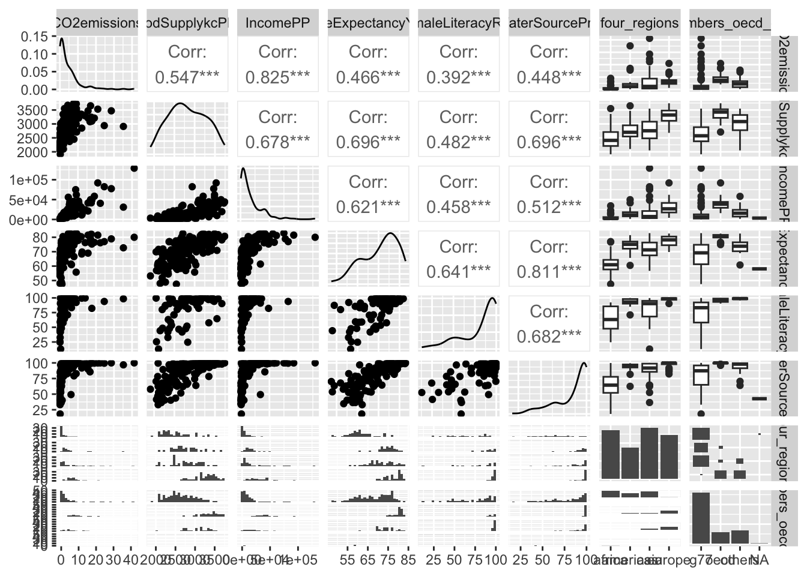
Poll Everywhere Question 3
Step 1: Simple linear regressions / analysis
For each covariate, we want to see how it relates to the outcome (without adjusting for other covariates)
We can partially do this with visualizations
Helps us see the data we throw it into regression that makes assumptions (like our LINE assumptions)
ggpairs()can be a quick way to do itggplot()can make each plot+ geom_boxplot()to make boxplots by groups for categorical covariates+ geom_jitter() + stat_summary()to make non-overlaping points with group means for categorical covariates+ geom_point()to make scatterplots for continuous covariates
We need to run simple linear regression
- We’re calling regression with multi-level categories “simple” even though there are multiple coefficients
Step 1: Simple linear regressions / analysis
Let’s think back to our Gapminder dataset
Always good to start with our main relationship: life expectancy vs. female literacy rate
- Throwback to Lesson 3 SLR when we first visualized and ran
lm()for this relationship
- Throwback to Lesson 3 SLR when we first visualized and ran
model_FLR = lm(LifeExpectancyYrs ~ FemaleLiteracyRate, data = gapm_sub)
Warning: Using `size` aesthetic for lines was deprecated in ggplot2 3.4.0.
ℹ Please use `linewidth` instead.`geom_smooth()` using formula = 'y ~ x'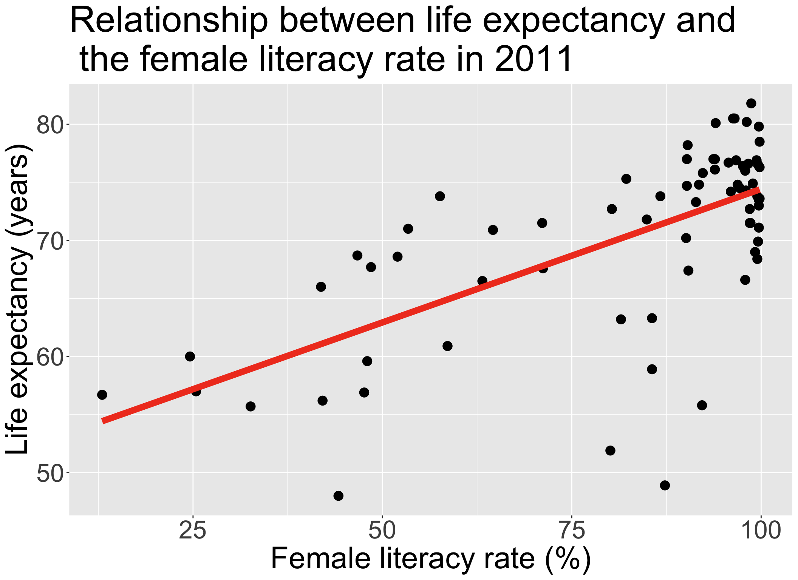
model_FLR = lm(LifeExpectancyYrs ~ FemaleLiteracyRate, data = gapm_sub)
tidy(model_FLR) %>% gt() %>% tab_options(table.font.size = 40) %>%
fmt_number(decimals = 3)| term | estimate | std.error | statistic | p.value |
|---|---|---|---|---|
| (Intercept) | 51.438 | 2.739 | 18.782 | 0.000 |
| FemaleLiteracyRate | 0.230 | 0.032 | 7.141 | 0.000 |
Poll Everywhere Question 4
Step 1: Simple linear regressions / analysis
- Let’s do this with one other variable before I show you a streamlined version of SLR
model_WR = lm(LifeExpectancyYrs ~ four_regions, data = gapm_sub)
Code
ggplot(gapm_sub, aes(x = four_regions, y = LifeExpectancyYrs)) +
geom_jitter(size = 1, alpha = .6, width = 0.2) +
stat_summary(fun = mean, geom = "point", size = 8, shape = 18) +
labs(x = "World region",
y = "Country life expectancy (years)",
title = "Life expectancy vs. world region",
caption = "Diamonds = region averages") +
theme(axis.title = element_text(size = 20),
axis.text = element_text(size = 20),
title = element_text(size = 20))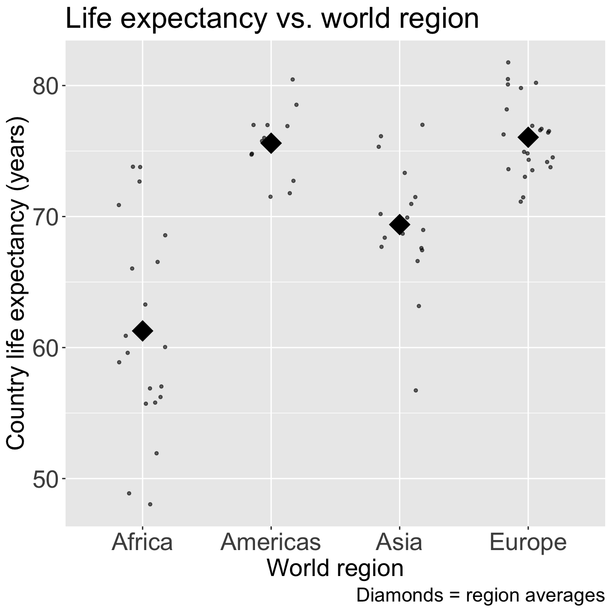
anova(model_WR) %>% tidy() %>% gt() %>%
tab_options(table.font.size = 40) %>%
fmt_number(decimals = 3)| term | df | sumsq | meansq | statistic | p.value |
|---|---|---|---|---|---|
| four_regions | 3.000 | 2,743.042 | 914.347 | 33.680 | 0.000 |
| Residuals | 68.000 | 1,846.077 | 27.148 | NA | NA |
Recall from Lesson 5 (SLR: More inference + Evaluation):
anova()with one model name will compare the model (model_WR) to the intercept model
Step 1: Simple linear regressions / analysis
If we do a good job visualizing the relationship between our outcome and each covariate, then we can proceed to a streamlined version of the F-test for each relationship
First, I will select the variables that we are considering for model selection:
gapm2 = gapm_sub %>% select(LifeExpectancyYrs, CO2emissions, FoodSupplykcPPD,
IncomePP, FemaleLiteracyRate, WaterSourcePrct,
four_regions, members_oecd_g77)- We need to make sure our dataset only contains the variables we are considering for the model:
gapm3 = gapm2 %>% select(-LifeExpectancyYrs)Step 1: Simple linear regressions / analysis
Now I can run the
lapply()function, which allows me to run the same function multiple times over all the columns ingapm3For each covariate I am running:
lm(gapm2$LifeExpectancyYrs ~ x) %>% anova()- So I am fitting the simple linear regression and printing the ANOVA table with F-test (comparing model with a without the covariate)
lapply( gapm3, function(x) lm(gapm2$LifeExpectancyYrs ~ x) %>% anova() )$CO2emissions
Analysis of Variance Table
Response: gapm2$LifeExpectancyYrs
Df Sum Sq Mean Sq F value Pr(>F)
x 1 452.3 452.31 7.6536 0.007241 **
Residuals 70 4136.8 59.10
---
Signif. codes: 0 '***' 0.001 '**' 0.01 '*' 0.05 '.' 0.1 ' ' 1
$FoodSupplykcPPD
Analysis of Variance Table
Response: gapm2$LifeExpectancyYrs
Df Sum Sq Mean Sq F value Pr(>F)
x 1 1893.4 1893.44 49.168 1.188e-09 ***
Residuals 70 2695.7 38.51
---
Signif. codes: 0 '***' 0.001 '**' 0.01 '*' 0.05 '.' 0.1 ' ' 1
$IncomePP
Analysis of Variance Table
Response: gapm2$LifeExpectancyYrs
Df Sum Sq Mean Sq F value Pr(>F)
x 1 1220.3 1220.34 25.358 3.557e-06 ***
Residuals 70 3368.8 48.13
---
Signif. codes: 0 '***' 0.001 '**' 0.01 '*' 0.05 '.' 0.1 ' ' 1
$FemaleLiteracyRate
Analysis of Variance Table
Response: gapm2$LifeExpectancyYrs
Df Sum Sq Mean Sq F value Pr(>F)
x 1 1934.2 1934.24 50.999 6.895e-10 ***
Residuals 70 2654.9 37.93
---
Signif. codes: 0 '***' 0.001 '**' 0.01 '*' 0.05 '.' 0.1 ' ' 1
$WaterSourcePrct
Analysis of Variance Table
Response: gapm2$LifeExpectancyYrs
Df Sum Sq Mean Sq F value Pr(>F)
x 1 2988.2 2988.20 130.66 < 2.2e-16 ***
Residuals 70 1600.9 22.87
---
Signif. codes: 0 '***' 0.001 '**' 0.01 '*' 0.05 '.' 0.1 ' ' 1
$four_regions
Analysis of Variance Table
Response: gapm2$LifeExpectancyYrs
Df Sum Sq Mean Sq F value Pr(>F)
x 3 2743.0 914.35 33.68 1.858e-13 ***
Residuals 68 1846.1 27.15
---
Signif. codes: 0 '***' 0.001 '**' 0.01 '*' 0.05 '.' 0.1 ' ' 1
$members_oecd_g77
Analysis of Variance Table
Response: gapm2$LifeExpectancyYrs
Df Sum Sq Mean Sq F value Pr(>F)
x 2 1103.7 551.85 10.925 7.553e-05 ***
Residuals 69 3485.4 50.51
---
Signif. codes: 0 '***' 0.001 '**' 0.01 '*' 0.05 '.' 0.1 ' ' 1- We can scroll through the output to see the ANOVA table for each covariate
Step 1: Simple linear regressions / analysis
- We can also filter the ANOVA table to just show the p-value for each F-test
sapply( gapm3, function(x) anova( lm(gapm2$LifeExpectancyYrs ~ x) )$`Pr(>F)` ) CO2emissions FoodSupplykcPPD IncomePP FemaleLiteracyRate
[1,] 0.007241207 1.187753e-09 3.557341e-06 6.894997e-10
[2,] NA NA NA NA
WaterSourcePrct four_regions members_oecd_g77
[1,] 1.148644e-17 1.857818e-13 7.55261e-05
[2,] NA NA NARow 1 is the p-value for the F-test
- This will help us in Step 2
Step 2: Preliminary variable selection
Identify candidates for your first multivariable model by performing an F-test on each covariate’s SLR
- Using p-values from previous slide
- If the p-value of the test is less than 0.25, then consider the variable a candidate
Candidates for first multivariable model
- All clinically important variables (regardless of p-value)
- Variables with univariate test with p-value < 0.25
- With more experience, you won’t need to rely on these strict rules as much
Step 2: Preliminary variable selection
From the previous p-values from the F-test on each covariate’s SLR
- Decision: we keep all the covariates since they all have a p-value < 0.25
sapply( gapm3, function(x) anova( lm(gapm2$LifeExpectancyYrs ~ x) )$`Pr(>F)` ) CO2emissions FoodSupplykcPPD IncomePP FemaleLiteracyRate
[1,] 0.007241207 1.187753e-09 3.557341e-06 6.894997e-10
[2,] NA NA NA NA
WaterSourcePrct four_regions members_oecd_g77
[1,] 1.148644e-17 1.857818e-13 7.55261e-05
[2,] NA NA NAStep 2: Preliminary variable selection
- Fit an initial model including any independent variable with p-value < 0.25 and clinically important variables
init_model = lm(LifeExpectancyYrs ~ FemaleLiteracyRate + CO2emissions + IncomePP +
four_regions + WaterSourcePrct + FoodSupplykcPPD + members_oecd_g77,
data = gapm2)
tidy(init_model, conf.int = T) %>% gt() %>% tab_options(table.font.size = 30) %>%
fmt_number(decimals = 4)| term | estimate | std.error | statistic | p.value | conf.low | conf.high |
|---|---|---|---|---|---|---|
| (Intercept) | 37.5560 | 4.4083 | 8.5194 | 0.0000 | 28.7410 | 46.3710 |
| FemaleLiteracyRate | 0.0020 | 0.0352 | 0.0580 | 0.9539 | −0.0684 | 0.0725 |
| CO2emissions | −0.2860 | 0.1340 | −2.1344 | 0.0368 | −0.5539 | −0.0181 |
| IncomePP | 0.0002 | 0.0001 | 2.4133 | 0.0188 | 0.0000 | 0.0003 |
| four_regionsAmericas | 9.8963 | 2.0031 | 4.9405 | 0.0000 | 5.8909 | 13.9017 |
| four_regionsAsia | 5.7849 | 1.5993 | 3.6172 | 0.0006 | 2.5870 | 8.9829 |
| four_regionsEurope | 7.1421 | 2.6994 | 2.6458 | 0.0104 | 1.7442 | 12.5399 |
| WaterSourcePrct | 0.1377 | 0.0658 | 2.0928 | 0.0405 | 0.0061 | 0.2693 |
| FoodSupplykcPPD | 0.0052 | 0.0021 | 2.4961 | 0.0153 | 0.0010 | 0.0093 |
| members_oecd_g77oecd | −0.3317 | 2.5476 | −0.1302 | 0.8968 | −5.4259 | 4.7625 |
| members_oecd_g77others | 0.3341 | 2.2986 | 0.1453 | 0.8849 | −4.2622 | 4.9304 |
Step 3: Assess change in coefficient
- This is where we start identifying covariates that we might remove
I would start by using the p-value to guide me towards specific variables
- Female literacy rate, but that’s our main covariate
members_oecd_g77- Maybe water source percent?
Some people will say you can use the p-value alone
- I like to double check that those variables do not have a large effect on the other coefficients
tidy(init_model) %>% gt() %>% tab_options(table.font.size = 33) %>%
fmt_number(decimals = 4)| term | estimate | std.error | statistic | p.value |
|---|---|---|---|---|
| (Intercept) | 37.5560 | 4.4083 | 8.5194 | 0.0000 |
| FemaleLiteracyRate | 0.0020 | 0.0352 | 0.0580 | 0.9539 |
| CO2emissions | −0.2860 | 0.1340 | −2.1344 | 0.0368 |
| IncomePP | 0.0002 | 0.0001 | 2.4133 | 0.0188 |
| four_regionsAmericas | 9.8963 | 2.0031 | 4.9405 | 0.0000 |
| four_regionsAsia | 5.7849 | 1.5993 | 3.6172 | 0.0006 |
| four_regionsEurope | 7.1421 | 2.6994 | 2.6458 | 0.0104 |
| WaterSourcePrct | 0.1377 | 0.0658 | 2.0928 | 0.0405 |
| FoodSupplykcPPD | 0.0052 | 0.0021 | 2.4961 | 0.0153 |
| members_oecd_g77oecd | −0.3317 | 2.5476 | −0.1302 | 0.8968 |
| members_oecd_g77others | 0.3341 | 2.2986 | 0.1453 | 0.8849 |
Step 3: Assess change in coefficient
- Very similar to the process we used when looking at confounders
One variable at a time, we run the multivariable model with and without the variable
- We look at the p-value of the F-test for the coefficients of said variable
- We look at the percent change for the coefficient (\(\Delta\%\)) of our explanatory variable
General rule: We can remove a variable if…
- p-value > 0.05 for the F-test of its own coefficients
- AND change in coefficient (\(\Delta\%\)) of our explanatory variable is < 10%
Step 3: Assess change in coefficient
- Let’s try this out on
members_oecd_g77
Display the ANOVA table with F-statistic and p-value
model_full = init_model
model_red = lm(LifeExpectancyYrs ~ FemaleLiteracyRate + CO2emissions + IncomePP +
four_regions + WaterSourcePrct + FoodSupplykcPPD,
data = gapm2)
anova(model_full, model_red) %>% tidy() %>%
gt() %>% tab_options(table.font.size = 35) %>% fmt_number(decimals = 3)| term | df.residual | rss | df | sumsq | statistic | p.value |
|---|---|---|---|---|---|---|
| LifeExpectancyYrs ~ FemaleLiteracyRate + CO2emissions + IncomePP + four_regions + WaterSourcePrct + FoodSupplykcPPD + members_oecd_g77 | 61.000 | 999.201 | NA | NA | NA | NA |
| LifeExpectancyYrs ~ FemaleLiteracyRate + CO2emissions + IncomePP + four_regions + WaterSourcePrct + FoodSupplykcPPD | 63.000 | 1,000.988 | −2.000 | −1.787 | 0.055 | 0.947 |
- \(\widehat\beta_{FLR, full} = 0.002\), \(\widehat\beta_{FLR, red} = 0.0036\)
\[ \Delta\% = 100\% \cdot \frac{\widehat\beta_{FLR, full} - \widehat\beta_{FLR, red}}{\widehat\beta_{FLR, full}} = 100\% \cdot \frac{0.002 - 0.0036}{0.002} = -74.41\% \]
- Based off the percent change, I would keep this in the model
Step 3: Assess change in coefficient
- Let’s try this out on water source percent (even though the p-value was < 0.05)
Display the ANOVA table with F-statistic and p-value
model_full = init_model
model_red = lm(LifeExpectancyYrs ~ FemaleLiteracyRate + CO2emissions + IncomePP +
four_regions + members_oecd_g77 + FoodSupplykcPPD,
data = gapm2)
anova(model_full, model_red) %>% tidy() %>%
gt() %>% tab_options(table.font.size = 35) %>% fmt_number(decimals = 3)| term | df.residual | rss | df | sumsq | statistic | p.value |
|---|---|---|---|---|---|---|
| LifeExpectancyYrs ~ FemaleLiteracyRate + CO2emissions + IncomePP + four_regions + WaterSourcePrct + FoodSupplykcPPD + members_oecd_g77 | 61.000 | 999.201 | NA | NA | NA | NA |
| LifeExpectancyYrs ~ FemaleLiteracyRate + CO2emissions + IncomePP + four_regions + members_oecd_g77 + FoodSupplykcPPD | 62.000 | 1,070.944 | −1.000 | −71.744 | 4.380 | 0.041 |
- \(\widehat\beta_{FLR, full} = 0.002\), \(\widehat\beta_{FLR, red} = 0.034\)
\[ \Delta\% = 100\% \cdot \frac{\widehat\beta_{FLR, full} - \widehat\beta_{FLR, red}}{\widehat\beta_{FLR, full}} = 100\% \cdot \frac{0.002 - 0.034}{0.002} = -1561.06\% \]
- Based off the percent change (and p-value), I would keep this in the model
Poll Everywhere Question 5
Step 3: Assess change in coefficient
At the end of this step, we have a preliminary main effects model
Where the variables are excluded that met the following criteria:
- P-value > 0.05 for the F-test of its own coefficients
- Change in coefficient (\(\Delta\%\)) of our explanatory variable is < 10%
In our example, the preliminary main effects model (end of Step 3) was the same as the initial model (end of Step 2)
Preliminary main effects model includes:
- FemaleLiteracyRate
- CO2emissions
- IncomePP
- four_regions
- members_oecd_g77
- FoodSupplykcPPD
- WaterSupplePct
Recap of Steps 1-3
Pre-step: Exploratory data analysis
Step 1: Simple linear regressions / analysis
Look at each covariate with outcome
Perform SLR for each covariate
Step 2: Preliminary variable selection
From SLR, decide which variables go into the initial model
Use F-test to see if each covariate (on its own) explains enough variation in outcome
End with initial model
Step 3: Assess change in coefficients
From the initial model at end of step 2, we take a variable out of the model if:
P-value > 0.05 for the F-test of its own coefficients
Change in coefficient (\(\Delta\%\)) of our explanatory variable is < 10%
End with preliminary main effects model
Learning Objectives
Understand the overall steps for purposeful selection as a model building strategy
Apply purposeful selection to a dataset using R
- Use different approaches to assess the linear scale of continuous variables in logistic regression
Step 4: Assess scale for continuous variables
We assume the linear regression model is linear for each continuous variable
We need to assess linearity for continuous variables in the model
- Do this through smoothed scatterplots that we introduced in Lesson 6 (SLR Diagnostics)
- Residual plots (can be used in SLR) does not help us in MLR
- Each term in MLR model needs to have linearity with outcome
Three methods/approaches to address the violation of linearity assumption:
- Approach 1: Categorize continuous variable
- Approach 2: Fractional Polynomials
- Approach 3: Spline functions
Approach will depend on the covariate!!
For our class, only implement Approach 1 or 2
Model at the end of Step 4 is the main effects model
Step 4: Assess scale for continuous variables
Residual plot does not help us with linearity in MLR
library(ggfortify)
autoplot(model_full) + theme(text=element_text(size=14))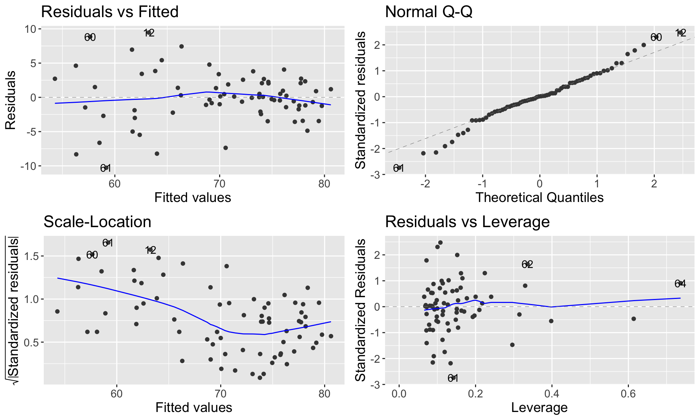
Step 4: Assess scale for continuous variables: Smoothed scatterplots
- Smoother scatterplots only check linearity, not addressing linearity issues
Can also identify extreme observations
Again, just want to flag these values
Can influence the assessment of linearity when using fractional polynomials or spline functions
Helps us decide if the continuous variable can stay as is in the model
- Problem: if not linear, then we need to represent the variable in a new way (Approaches 1-3)
Step 4: Assess scale for continuous variables: Smoothed scatterplots
In Gapminder dataset, we have 5 continuous variables:
- CO2 Emissions
- Food Supply
- Income
- Female Literacy Rate
- Water source percent
Plot each of these agains the outcome, life expectancy
Step 4: Assess scale for continuous variables: Smoothed scatterplots
We can quickly look at ggpairs() to identify variables
gapm2 %>% select(where(is.numeric)) %>%
relocate(LifeExpectancyYrs, .after = last_col()) %>% ggpairs()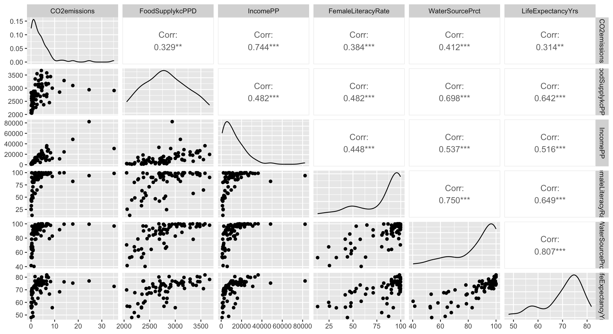
Step 4: Assess scale for continuous variables: Smoothed scatterplots
Take a look at C02, Food Supply, and Income
CO2 = ggplot(data = gapm2, aes(y = LifeExpectancyYrs, x = CO2emissions)) +
geom_point() +
geom_smooth(se=F) + labs(x = "CO2 Emissions (kt)", y = "Life Expectancy (yrs)")
FS = ggplot(data = gapm2, aes(y = LifeExpectancyYrs, x = FoodSupplykcPPD)) +
geom_point() +
geom_smooth(se=F) + labs(x = "Food Supply (kcal PPD)", y = "Life Expectancy (yrs)")
Income = ggplot(data = gapm2, aes(y = LifeExpectancyYrs, x = IncomePP)) +
geom_point() +
geom_smooth(se=F) + labs(x = "Income (GDP per capita)", y = "Life Expectancy (yrs)")
grid.arrange(CO2, FS, Income, nrow=1)`geom_smooth()` using method = 'loess' and formula = 'y ~ x'
`geom_smooth()` using method = 'loess' and formula = 'y ~ x'
`geom_smooth()` using method = 'loess' and formula = 'y ~ x'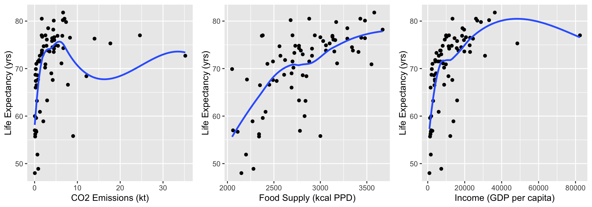
- Food Supply looks admissible
- CO2 Emissions and Income do not look very linear, but I want to zoom into the area of the plots that have most of the data
Step 4: Assess scale for continuous variables: Smoothed scatterplots
Zoom into areas on plots with more data
CO2 = ggplot(data = gapm2, aes(y = LifeExpectancyYrs, x = CO2emissions)) +
geom_point() + xlim(0,10) +
geom_smooth(se=F) + labs(x = "CO2 Emissions (kt)", y = "Life Expectancy (yrs)")
FS = ggplot(data = gapm2, aes(y = LifeExpectancyYrs, x = FoodSupplykcPPD)) +
geom_point() +
geom_smooth(se=F) + labs(x = "Food Supply (kcal PPD)", y = "Life Expectancy (yrs)")
Income = ggplot(data = gapm2, aes(y = LifeExpectancyYrs, x = IncomePP)) +
geom_point() + xlim(0,40000) +
geom_smooth(se=F) + labs(x = "Income (GDP per capita)", y = "Life Expectancy (yrs)")
grid.arrange(CO2, FS, Income, nrow=1)`geom_smooth()` using method = 'loess' and formula = 'y ~ x'Warning: Removed 5 rows containing non-finite outside the scale range
(`stat_smooth()`).Warning: Removed 5 rows containing missing values or values outside the scale range
(`geom_point()`).`geom_smooth()` using method = 'loess' and formula = 'y ~ x'
`geom_smooth()` using method = 'loess' and formula = 'y ~ x'Warning: Removed 2 rows containing non-finite outside the scale range
(`stat_smooth()`).Warning: Removed 2 rows containing missing values or values outside the scale range
(`geom_point()`).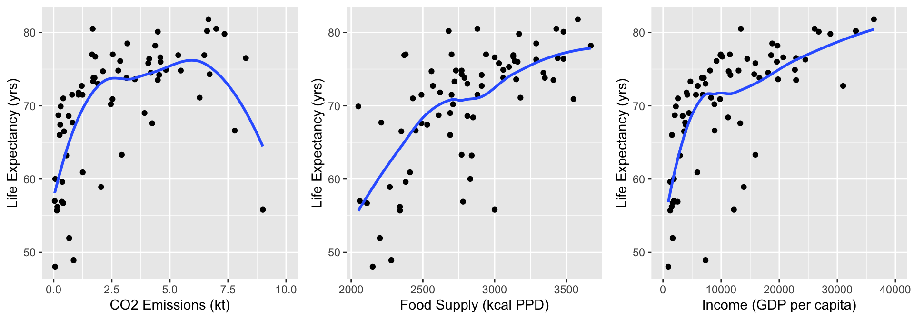
- Food Supply still looks admissible
- CO2 Emissions and Income not linear: will address this!!
Step 4: Assess scale for continuous variables
Three methods/approaches to address the violation of linearity assumption:
- Approach 1: Categorize continuous variable
- Approach 2: Fractional Polynomials
- Approach 3: Spline functions
Step 4: Approach 1: Categorize continuous variable
Categorize continuous variables
Percentiles, quartiles, quantiles
- Create indicator variables corresponding to each quartile
Meaningful thresholds
- Example: income level groups discussed by Gapminder
Disadvantages:
Takes some time to create new variables, especially with multiple continuous covariates
Start with quartiles, but might be more appropriate to use different splits
- No set rules on this
Advantage: graphical and visually helps
Step 4: Approach 1: Categorize continuous variable
For income, I would use Gapminder’s income level groups
- Discussed in Lesson 10 Categorical Covariates (slide 43)
Experts in the field have developed these income groups
- I think this is best solution for income (that was not meeting linearity as a continuous variable)
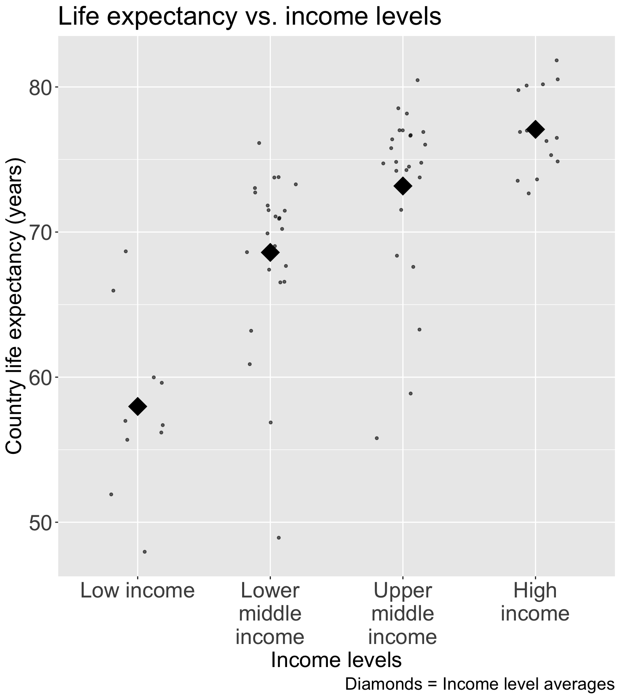
Step 4: Approach 1: Categorize continuous variable
Let’s still try it out with CO2 Emissions (kt)
I have plotted the quartile lines of food supply with red lines
Take a look at the quartiles within the scatterplot
vline_coordinates= data.frame(Quantile_Name=names(quantile(gapm2$CO2emissions)),
quantile_values=as.numeric(quantile(gapm2$CO2emissions)))
ggplot(data = gapm2, aes(y = LifeExpectancyYrs, x = CO2emissions)) +
geom_point(size = 3) +
#geom_smooth(se=F) +
labs(x = "CO2 Emissions (kt)", y = "Life Expectancy (yrs)") +
geom_vline(data = vline_coordinates, aes(xintercept = quantile_values),
color = "red", linetype = "dashed", size = 2) +
theme(axis.title = element_text(size = 25),
axis.text = element_text(size = 25),
title = element_text(size = 25))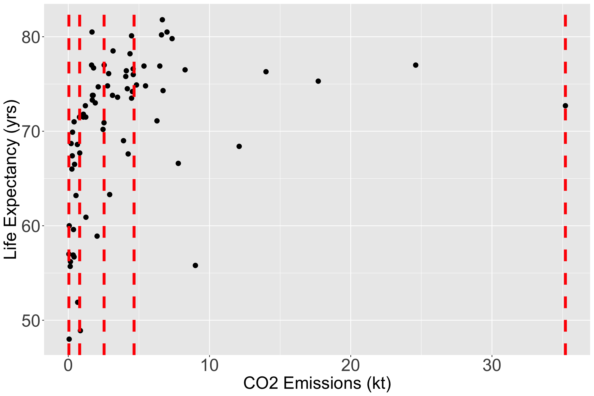
Step 4: Approach 1: Categorize continuous variable
- Let’s make the quartiles for CO2 emissions:
library(dvmisc)Loading required package: rbenchmark
Attaching package: 'dvmisc'The following object is masked from 'package:tidyr':
expand_gridgapm2 = gapm2 %>%
mutate(CO2_q = quant_groups(CO2emissions, groups = 4) %>% factor())Observations per group: 18, 18, 18, 18. 0 missing.Take a look at the quartile means within the scatterplot
ggplot(data = gapm2, aes(y = LifeExpectancyYrs, x = CO2_q)) +
# geom_point(size = 3, aes(y = LifeExpectancyYrs, x = CO2emissions)) +
stat_summary(fun = mean, geom = "point", size = 8, shape = 18) +
#geom_smooth(se=F) +
labs(x = "CO2 Emissions (kt)", y = "Life Expectancy (yrs)") +
theme(axis.title = element_text(size = 25),
axis.text = element_text(size = 25),
title = element_text(size = 25))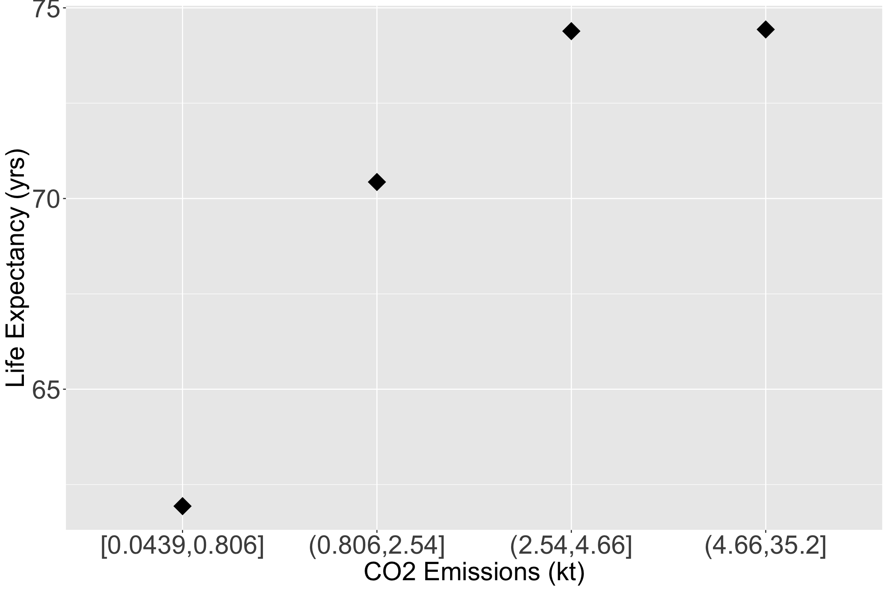
Step 4: Approach 1: Categorize continuous variable
- Let’s fit a new model with the two new representations for income and CO2 emissions
- Remember, this is the main effects model if we decide to make CO2 into quartiles
main_eff_model = lm(LifeExpectancyYrs ~ FemaleLiteracyRate + CO2_q + income_levels1 +
four_regions + WaterSourcePrct + FoodSupplykcPPD + members_oecd_g77,
data = gapm2)tidy(main_eff_model) %>% gt() %>% tab_options(table.font.size = 33) %>%
fmt_number(decimals = 3)| term | estimate | std.error | statistic | p.value |
|---|---|---|---|---|
| (Intercept) | 39.877 | 4.889 | 8.157 | 0.000 |
| FemaleLiteracyRate | −0.073 | 0.047 | −1.555 | 0.125 |
| CO2_q(0.806,2.54] | 1.099 | 1.914 | 0.574 | 0.568 |
| CO2_q(2.54,4.66] | −0.292 | 2.419 | −0.121 | 0.904 |
| CO2_q(4.66,35.2] | −0.595 | 2.524 | −0.236 | 0.814 |
| income_levels1Lower middle income | 5.441 | 2.343 | 2.322 | 0.024 |
| income_levels1Upper middle income | 6.111 | 2.954 | 2.069 | 0.043 |
| income_levels1High income | 7.959 | 3.277 | 2.429 | 0.018 |
| four_regionsAmericas | 9.003 | 2.050 | 4.391 | 0.000 |
| four_regionsAsia | 5.260 | 1.637 | 3.213 | 0.002 |
| four_regionsEurope | 6.855 | 2.871 | 2.387 | 0.020 |
| WaterSourcePrct | 0.166 | 0.066 | 2.496 | 0.015 |
| FoodSupplykcPPD | 0.004 | 0.002 | 1.825 | 0.073 |
| members_oecd_g77oecd | 1.119 | 2.674 | 0.418 | 0.677 |
| members_oecd_g77others | 1.047 | 2.511 | 0.417 | 0.678 |
Step 4: Approach 2: Fractional Polynomials
Main concepts and transformations presented in Lesson 7 SLR: Model Evaluation and Diagnostics (slide 33 on)
Idea: test many transformations of a continuous covariate
Recall Tukey’s transformation (power) ladder
- And can use
R’sgladder()to see the transformations
- And can use
| Power p | -3 | -2 | -1 | -1/2 | 0 | 1/2 | 1 | 2 | 3 |
|---|---|---|---|---|---|---|---|---|---|
| \(\frac{1}{x^3}\) | \(\frac{1}{x^2}\) | \(\frac{1}{x}\) | \(\frac{1}{\sqrt{x}}\) | \(\log(x)\) | \(\sqrt{x}\) | \(x\) | \(x^2\) | \(x^3\) |
We can run through each and test different models, or use the approach from Lesson 7
There is also a package we can use!
- mfp package in R contains the fp() function
Step 4: Approach 2: Fractional Polynomials
library(mfp)Loading required package: survivalfp_model_CO2 = mfp(LifeExpectancyYrs ~ FemaleLiteracyRate +
fp(CO2emissions, df = 4) + income_levels1 + four_regions +
WaterSourcePrct + FoodSupplykcPPD + members_oecd_g77,
data = gapm2, family = "gaussian")
fp_model_CO2$fptable %>% gt(rownames_to_stub = T) %>% tab_options(table.font.size = 24)| df.initial | select | alpha | df.final | power1 | power2 | |
|---|---|---|---|---|---|---|
| four_regionsAmericas | 1 | 1 | 0.05 | 1 | 1 | . |
| four_regionsAsia | 1 | 1 | 0.05 | 1 | 1 | . |
| four_regionsEurope | 1 | 1 | 0.05 | 1 | 1 | . |
| WaterSourcePrct | 1 | 1 | 0.05 | 1 | 1 | . |
| income_levels1Lower middle income | 1 | 1 | 0.05 | 1 | 1 | . |
| income_levels1Upper middle income | 1 | 1 | 0.05 | 1 | 1 | . |
| income_levels1High income | 1 | 1 | 0.05 | 1 | 1 | . |
| FoodSupplykcPPD | 1 | 1 | 0.05 | 1 | 1 | . |
| FemaleLiteracyRate | 1 | 1 | 0.05 | 1 | 1 | . |
| CO2emissions | 4 | 1 | 0.05 | 1 | 1 | . |
| members_oecd_g77oecd | 1 | 1 | 0.05 | 1 | 1 | . |
| members_oecd_g77others | 1 | 1 | 0.05 | 1 | 1 | . |
Step 4: Approach 2: Fractional Polynomials
| df.initial | select | alpha | df.final | power1 | power2 | |
|---|---|---|---|---|---|---|
| four_regionsAmericas | 1 | 1 | 0.05 | 1 | 1 | . |
| four_regionsAsia | 1 | 1 | 0.05 | 1 | 1 | . |
| four_regionsEurope | 1 | 1 | 0.05 | 1 | 1 | . |
| WaterSourcePrct | 1 | 1 | 0.05 | 1 | 1 | . |
| income_levels1Lower middle income | 1 | 1 | 0.05 | 1 | 1 | . |
| income_levels1Upper middle income | 1 | 1 | 0.05 | 1 | 1 | . |
| income_levels1High income | 1 | 1 | 0.05 | 1 | 1 | . |
| FoodSupplykcPPD | 1 | 1 | 0.05 | 1 | 1 | . |
| FemaleLiteracyRate | 1 | 1 | 0.05 | 1 | 1 | . |
| CO2emissions | 4 | 1 | 0.05 | 1 | 1 | . |
| members_oecd_g77oecd | 1 | 1 | 0.05 | 1 | 1 | . |
| members_oecd_g77others | 1 | 1 | 0.05 | 1 | 1 | . |
Conclusion from fractional polynomial is that CO2 does not need to be transformed
A little counter-intuitive to what we saw in quartiles
Thus, I think leaving CO2 emissions as quartiles is best!
Step 4: Approach 3: Spline functions
- Spline function is to fit a series of smooth curves that joined at specific points (called knots)


Step 4: Approach 3: Spline functions
Need to specify knots for spline functions
- More knots are flexible, but requires more parameters to estimate
- In most applications three to five knots are sufficient
- Within our class, fractional polynomials will be sufficient
If you think this is cool, I highly suggest you look into Functional Data Analysis (FDA) or Functional Regression
- Jeffrey Morris is a big name in that field
In R there are a few options to incorporate splines
pspline( ): More informationsmoothHR(): More information
Step 4 Conclusion: main effects model
We concluded that we will use:
- Income levels (categorical) that Gapminder created
- Quartiles for CO2 Emissions
tidy(main_eff_model) %>% gt() %>% tab_options(table.font.size = 33) %>%
fmt_number(decimals = 3)| term | estimate | std.error | statistic | p.value |
|---|---|---|---|---|
| (Intercept) | 39.877 | 4.889 | 8.157 | 0.000 |
| FemaleLiteracyRate | −0.073 | 0.047 | −1.555 | 0.125 |
| CO2_q(0.806,2.54] | 1.099 | 1.914 | 0.574 | 0.568 |
| CO2_q(2.54,4.66] | −0.292 | 2.419 | −0.121 | 0.904 |
| CO2_q(4.66,35.2] | −0.595 | 2.524 | −0.236 | 0.814 |
| income_levels1Lower middle income | 5.441 | 2.343 | 2.322 | 0.024 |
| income_levels1Upper middle income | 6.111 | 2.954 | 2.069 | 0.043 |
| income_levels1High income | 7.959 | 3.277 | 2.429 | 0.018 |
| four_regionsAmericas | 9.003 | 2.050 | 4.391 | 0.000 |
| four_regionsAsia | 5.260 | 1.637 | 3.213 | 0.002 |
| four_regionsEurope | 6.855 | 2.871 | 2.387 | 0.020 |
| WaterSourcePrct | 0.166 | 0.066 | 2.496 | 0.015 |
| FoodSupplykcPPD | 0.004 | 0.002 | 1.825 | 0.073 |
| members_oecd_g77oecd | 1.119 | 2.674 | 0.418 | 0.677 |
| members_oecd_g77others | 1.047 | 2.511 | 0.417 | 0.678 |
Learning Objectives
- Understand the overall steps for purposeful selection as a model building strategy
- Apply purposeful selection to a dataset using R
- Use different approaches to assess the linear scale of continuous variables in logistic regression
Step 5: Check for interactions
- Create a list of interaction terms from variables in the “main effects model” that has clinical plausibility
Add the interaction variables, one at a time, to the main effects model, and assess the significance using a likelihood ratio test or Wald test
- May keep interaction terms with p-value < 0.10 (or 0.05)
- Keep the main effects untouched, only simplify the interaction terms
- Use methods from Step 2 (comparing model with all interactions to a smaller model with interactions) to determine which interactions to keep
- The model by the end of Step 5 is called the preliminary final model
Step 5: Check for interactions
vars = names(model.frame(main_eff_model))[-1]
interactions = combn(vars, 2, function(x) paste(x, collapse=" * ")) %>%
grep(., pattern = "FemaleLiteracyRate", value = T) MLRs = lapply(interactions, function(int)
lm(reformulate(c(vars, int), "LifeExpectancyYrs"), data = gapm2))Step 5: Check for interactions
MLRs[[1]] %>% tidy() %>% gt() %>%
tab_options(table.font.size = 33) %>%
fmt_number(decimals = 3)| term | estimate | std.error | statistic | p.value |
|---|---|---|---|---|
| (Intercept) | 37.326 | 5.463 | 6.833 | 0.000 |
| FemaleLiteracyRate | −0.035 | 0.058 | −0.602 | 0.550 |
| CO2_q(0.806,2.54] | 9.049 | 7.248 | 1.249 | 0.217 |
| CO2_q(2.54,4.66] | 7.843 | 16.082 | 0.488 | 0.628 |
| CO2_q(4.66,35.2] | −5.980 | 25.867 | −0.231 | 0.818 |
| income_levels1Lower middle income | 4.032 | 2.661 | 1.515 | 0.136 |
| income_levels1Upper middle income | 4.997 | 3.239 | 1.543 | 0.129 |
| income_levels1High income | 6.825 | 3.549 | 1.923 | 0.060 |
| four_regionsAmericas | 9.317 | 2.193 | 4.250 | 0.000 |
| four_regionsAsia | 5.412 | 1.668 | 3.246 | 0.002 |
| four_regionsEurope | 7.267 | 2.992 | 2.429 | 0.018 |
| WaterSourcePrct | 0.178 | 0.070 | 2.529 | 0.014 |
| FoodSupplykcPPD | 0.004 | 0.002 | 1.706 | 0.094 |
| members_oecd_g77oecd | 0.798 | 2.731 | 0.292 | 0.771 |
| members_oecd_g77others | 1.121 | 2.588 | 0.433 | 0.667 |
| FemaleLiteracyRate:CO2_q(0.806,2.54] | −0.104 | 0.091 | −1.144 | 0.258 |
| FemaleLiteracyRate:CO2_q(2.54,4.66] | −0.104 | 0.177 | −0.590 | 0.557 |
| FemaleLiteracyRate:CO2_q(4.66,35.2] | 0.038 | 0.268 | 0.141 | 0.889 |
Step 5: Check for interactions
You can alse go straight to using the anova() function to compare the preliminary model.
anova_res = lapply(interactions,
function(int) anova(lm(reformulate(c(vars, int), "LifeExpectancyYrs"),
data = gapm2), main_eff_model))
anova_res[[1]] %>% tidy() %>%
gt() %>% tab_options(table.font.size = 35) %>% fmt_number(decimals = 3)| term | df.residual | rss | df | sumsq | statistic | p.value |
|---|---|---|---|---|---|---|
| LifeExpectancyYrs ~ FemaleLiteracyRate + CO2_q + income_levels1 + four_regions + WaterSourcePrct + FoodSupplykcPPD + members_oecd_g77 + FemaleLiteracyRate * CO2_q | 54.000 | 919.287 | NA | NA | NA | NA |
| LifeExpectancyYrs ~ FemaleLiteracyRate + CO2_q + income_levels1 + four_regions + WaterSourcePrct + FoodSupplykcPPD + members_oecd_g77 | 57.000 | 946.458 | −3.000 | −27.171 | 0.532 | 0.662 |
Step 5: Check for interactions
I went through all the ANOVA tables, and found the following significant interactions:
- None!
anova_res[[1]]
Analysis of Variance Table
Model 1: LifeExpectancyYrs ~ FemaleLiteracyRate + CO2_q + income_levels1 +
four_regions + WaterSourcePrct + FoodSupplykcPPD + members_oecd_g77 +
FemaleLiteracyRate * CO2_q
Model 2: LifeExpectancyYrs ~ FemaleLiteracyRate + CO2_q + income_levels1 +
four_regions + WaterSourcePrct + FoodSupplykcPPD + members_oecd_g77
Res.Df RSS Df Sum of Sq F Pr(>F)
1 54 919.29
2 57 946.46 -3 -27.171 0.532 0.6623
[[2]]
Analysis of Variance Table
Model 1: LifeExpectancyYrs ~ FemaleLiteracyRate + CO2_q + income_levels1 +
four_regions + WaterSourcePrct + FoodSupplykcPPD + members_oecd_g77 +
FemaleLiteracyRate * income_levels1
Model 2: LifeExpectancyYrs ~ FemaleLiteracyRate + CO2_q + income_levels1 +
four_regions + WaterSourcePrct + FoodSupplykcPPD + members_oecd_g77
Res.Df RSS Df Sum of Sq F Pr(>F)
1 54 933.66
2 57 946.46 -3 -12.802 0.2468 0.8633
[[3]]
Analysis of Variance Table
Model 1: LifeExpectancyYrs ~ FemaleLiteracyRate + CO2_q + income_levels1 +
four_regions + WaterSourcePrct + FoodSupplykcPPD + members_oecd_g77 +
FemaleLiteracyRate * four_regions
Model 2: LifeExpectancyYrs ~ FemaleLiteracyRate + CO2_q + income_levels1 +
four_regions + WaterSourcePrct + FoodSupplykcPPD + members_oecd_g77
Res.Df RSS Df Sum of Sq F Pr(>F)
1 54 850.47
2 57 946.46 -3 -95.987 2.0315 0.1203
[[4]]
Analysis of Variance Table
Model 1: LifeExpectancyYrs ~ FemaleLiteracyRate + CO2_q + income_levels1 +
four_regions + WaterSourcePrct + FoodSupplykcPPD + members_oecd_g77 +
FemaleLiteracyRate * WaterSourcePrct
Model 2: LifeExpectancyYrs ~ FemaleLiteracyRate + CO2_q + income_levels1 +
four_regions + WaterSourcePrct + FoodSupplykcPPD + members_oecd_g77
Res.Df RSS Df Sum of Sq F Pr(>F)
1 56 943.42
2 57 946.46 -1 -3.0399 0.1804 0.6726
[[5]]
Analysis of Variance Table
Model 1: LifeExpectancyYrs ~ FemaleLiteracyRate + CO2_q + income_levels1 +
four_regions + WaterSourcePrct + FoodSupplykcPPD + members_oecd_g77 +
FemaleLiteracyRate * FoodSupplykcPPD
Model 2: LifeExpectancyYrs ~ FemaleLiteracyRate + CO2_q + income_levels1 +
four_regions + WaterSourcePrct + FoodSupplykcPPD + members_oecd_g77
Res.Df RSS Df Sum of Sq F Pr(>F)
1 56 915.40
2 57 946.46 -1 -31.063 1.9003 0.1735
[[6]]
Analysis of Variance Table
Model 1: LifeExpectancyYrs ~ FemaleLiteracyRate + CO2_q + income_levels1 +
four_regions + WaterSourcePrct + FoodSupplykcPPD + members_oecd_g77 +
FemaleLiteracyRate * members_oecd_g77
Model 2: LifeExpectancyYrs ~ FemaleLiteracyRate + CO2_q + income_levels1 +
four_regions + WaterSourcePrct + FoodSupplykcPPD + members_oecd_g77
Res.Df RSS Df Sum of Sq F Pr(>F)
1 55 934.95
2 57 946.46 -2 -11.513 0.3386 0.7142
- Think about it: does that track with what we saw in our interactions lecture?
Step 6: Assess model fit
- Assess the adequacy of the model and check its fit
Methods will be discussed next class
Combination of diagnostics and model fit statistics!
Look at model fit statistics in this lesson
Look at diagnostics in Lesson 14: MLR Diagnostics
- If the model is adequate and fits well, then it is the Final model
Step 6: Assess model fit
final_model = main_eff_model
prelim_me_model = model_full
save(final_model, prelim_me_model, gapm2, file = here("./lessons/15_MLR_Diagnostics/final_mod.rda"))Our final model contains
Female Literacy Rate
FLRCO2 Emissions in quartiles
CO2_qIncome levels in groups assigned by Gapminder
income_levelsWorld regions
four_regionsMembership of global and economic groups
members_oecd_g77- OECD: Organization for Economic Co-operation and Development
- G77: Group of 77
- Other
Food Supply
FoodSupplykcPPDClean Water Supply
WaterSupplePct
Step 6: Assess model fit: Model fit statistics
- Way I did it in the lab instructions
sum_fm = summary(final_model)
model_fit_stats = data.frame(Model = "Final model",
Adjusted_R_sq = sum_fm$adj.r.squared,
AIC = AIC(final_model), BIC = BIC(final_model))
model_fit_stats %>% gt() %>%
tab_options(table.font.size = 35) %>% fmt_number(decimals = 3)| Model | Adjusted_R_sq | AIC | BIC |
|---|---|---|---|
| Final model | 0.743 | 421.804 | 458.230 |
- Another (maybe faster?) way to do it (
glance()inbroompackage)
glance(final_model) %>% mutate(Model = "Final model") %>%
select(Model, adj.r.squared, AIC, BIC) %>% gt() %>%
tab_options(table.font.size = 35) %>% fmt_number(decimals = 3)| Model | adj.r.squared | AIC | BIC |
|---|---|---|---|
| Final model | 0.743 | 421.804 | 458.230 |
Step 6: Assess model fit: Comparing model fits
Remember the preliminary main effects model (at end of Step 3): same as final model but the continuous varaibles, income and CO2 emissions, were not categorized
We can compare model fit statistics of the preliminary main effects model and the final model
fm_glance = glance(final_model) %>% mutate(Model = "Final model") %>%
select(Model, `Adj R-squared` = adj.r.squared, AIC, BIC)
pmem_glance = glance(prelim_me_model) %>%
mutate(Model = "Preliminary main effects model") %>%
select(Model, `Adj R-squared` = adj.r.squared, AIC, BIC)
rbind(fm_glance, pmem_glance) %>% gt() %>%
tab_options(table.font.size = 35) %>% fmt_number(decimals = 3)| Model | Adj R-squared | AIC | BIC |
|---|---|---|---|
| Final model | 0.743 | 421.804 | 458.230 |
| Preliminary main effects model | 0.747 | 417.708 | 445.028 |
Remember, adjusted \(R^2\), AIC, and BIC penalize models for more coefficients
Preliminary main effects model: better fit statistics, but violates linearity assumption